In the case of morphisms, we use the following test category.
Axiom C.1 (Walking morphism). There is a category \([1]\) equipped with objects \(0,1\colon * \to [1]\). Moreover, the functors \(0,1\colon * \to [1]^{\simeq}\) induce an equivalence \[ \lra{0,1}\colon * \sqcup * \iso [1]^{\simeq}. \]
In particular, \(*\sqcup *\) is an anima, since it is equivalent to the anima \([1]^\simeq\).
By substitution along \(p_\Gamma\colon\Gamma\to *\), the two displayed objects also give terms \[ \Gamma\vdash 0,1:[1] \] in every categorical context \(\Gamma\).
The category \([1]\) is called the walking morphism and should be thought of as the poset \(\{0 \leq 1\}\).
Let us introduce some standard terminology regarding functors out of \([1]\).
Definition 2.1.1 (Morphisms). A morphism in a category \(C\) is defined as a functor \(f\colon [1] \to C\), or equivalently as an object of the arrow category \(\Fun([1],C)\).
Every morphism \(f\colon [1] \to C\) has a source/domain \(f(0)\colon * \to C\) and a target/codomain \(f(1) \colon * \to C\), obtained by precomposition with \(0,1\colon * \to [1]\). If \(f\) is a morphism in \(C\), and \(x\) and \(y\) are objects of \(C\), we will often write \(f\colon x \to y\) to indicate that \(f\) comes equipped with identifications \(x = f(0)\) and \(y = f(1)\), which we will mostly leave implicit in the notation. In this case we say that \(f\) is a morphism from \(x\) to \(y\).
We write \(\ev_0,\ev_1\colon \Fun([1],C) \to C\) for the source and target functors, given by evaluation at \(0\) and \(1\), cf. Construction 1.7.6.
Definition 2.1.2 (Natural transformations). If \(C\) and \(D\) are categories, we define a natural transformation of functors \(C \to D\) to be a morphism in \(\Fun(C,D)\). By (un)currying, this may equivalently be encoded as a functor \([1] \times C \to D\).
Definition 2.1.3 (Arrow category/hom anima). For a category \(C\), we define its arrow category as
\[
\Ar(C) \quad := \quad \Fun([1],C).
\]
Given absolute objects \(x\) and \(y\) of \(C\), we define the hom anima \(C(x,y)\) via the following pullback square:
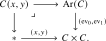
Convention 2.1.4 (Morphism expressions). For functors \(f,g\colon C\to D\), the notation \[ x:C\vdash\alpha(x):f(x)\to g(x) \] means a functor \(H:C\times[1]\to D\) together with identifications \(H(-,0)= f\) and \(H(-,1)= g\). Currying gives its equivalent description as a functor \(C\to\Ar(D)\) with the same endpoint comparisons. In the absolute case, we use \([1]\to D\) directly.
An identification between two morphism expressions with the same displayed source and target is an identification of their interval diagrams together with compatibility with the two endpoint comparisons. For absolute morphisms between fixed objects \(a,b:D\), it is an identification in \(D(a,b)\). In context \(x:C\), with the same fixed endpoints, it is an identification between functors \(C\to D(a,b)\). For general \(f\) and \(g\) that vary with \(x\), it is simply a functor into \(D\) with the two endpoint compatibilities.
Construction 2.1.5 (From identifications to morphism expressions). A primitive identification \(\alpha\colon f= g\) determines a morphism expression from \(f(x)\) to \(g(x)\). Take the constant interval \[ C\times[1]\xrightarrow{\pr_1}C\xrightarrow{f}D, \] with its canonical source identification, and with target identification given by \(\alpha\).
Construction 2.1.6. Let \(f\colon C \to D\) be a functor and consider two absolute objects \(x\) and \(y\) of \(C\). Then the induced functor \(f_*\colon \Ar(C) \to \Ar(D)\) induces a functor \[ f\colon C(x,y) \to D(f(x),f(y)) \] on fibers.
Example 2.1.7 (Identity morphism). In a common categorical context \(\Gamma\), a term \(\Gamma\vdash x:C\) determines the identity morphism \(\Gamma\vdash\id_x\colon x\to x\), defined by currying the composite \[ \Gamma\times[1]\xrightarrow{\pr_1}\Gamma\xrightarrow{x}C. \] It comes with a specified identification from its uncurrying to this composite. For every functor \(f\colon C\to D\), there is a preferred identification \(\Gamma\vdash f(\id_x)=\id_{f(x)}\). In the absolute case \(\Gamma=*\), this recovers the usual identity morphism \(\id_x\in C(x,x)\).
Definition 2.1.8 (Slice categories). Let \(C\) be a category and let \(x\) be an absolute object of \(C\). We define the
slice categories \(C_{/x}\) and \(C_{x/}\) via the following two pullback diagrams:
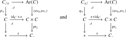
Definition 2.1.9 (Initial/terminal object). An absolute object \(x\) in a category \(C\) is called terminal if the functor \(p_x\colon C_{/x} \to C\) is an equivalence. Dually, \(x\) is called initial if \(q_x\colon C_{x/} \to C\) is an equivalence.
Remark 2.1.10. Observe that the fiber of \(p_x\) over an absolute object \(y\) is the hom anima \(C(y,x)\), using the pasting law for pullback squares. In particular, if \(x\) is terminal then \(C(y,x)\) is contractible for every \(y\). Dually, if \(x\) is initial then \(C(x,y)\) is contractible for all \(y\). The converse will be established later, once additional axioms have been introduced.
Axiom C.2. The absolute object \(0\colon *\to[1]\) is initial. The absolute object \(1\colon *\to[1]\) is terminal.
Construction 2.1.11. As a consequence of Axiom C.2, we obtain the following two pullback squares:
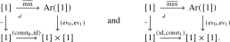
Lemma 2.1.12. The maps \(\max\) and \(\min\) satisfy the identifications
\begin{align*}
\max(x,0) &= x = \max(0,x), & \max(x,1) &= 1 = \max(1,x), \\
\min(x,0) &= 0 = \min(0,x), & \min(x,1) &= x = \min(1,x),
\end{align*}
in the sense that the following diagrams commute:

Proof
The identifications \(\min(x,0) = 0\), \(\min(x,1) = x\), \(\max(x,0) = x\) and \(\max(x,1) = 1\) are immediate from the two pullback squares stated before the lemma. For the other four relations we use that \(q_0^{-1}\colon [1] \iso [1]_{0/}\) sends \(0\) to \(\id_0\colon 0 \to 0\) and \(1\) to \(\can\colon 0 \to 1\), while \(p_1^{-1}\colon [1] \iso [1]_{/1}\) sends \(0\) to \(\can\colon 0 \to 1\) and \(1\) to \(\id_1\colon 1 \to 1\).
2.1.1 Commutative triangles
Apart from the poset \([1] = \{0 \leq 1\}\), which classifies morphisms, there should also be a poset \([2] = \{\overline{0} \leq \overline{1} \leq \overline{2}\}\) classifying commutative triangles.
Definition 2.1.13 (Walking commutative triangle). We define the walking commutative triangle as \[ [2] \quad := \quad \Ar([1]) \quad = \quad \Fun([1],[1]). \] We define objects \(\overline{0}, \overline{1},\overline{2}: [2]\) by: \[ \overline{0} := \id_0, \qquad \overline{1} := \can, \qquad \overline{2} := \id_1, \] where \(\can\colon [1] \to [1]\) is the identity of \([1]\), regarded as a morphism \(\can\colon 0 \to 1\) in \([1]\).
Construction 2.1.14. We construct three face maps \(d_i\colon [1] \to [2]\) for \(i =0,1,2\):
• We set \(d_0 := \overline{\max}\colon [1] \to \Fun([1],[1])\);
• We set \(d_1 := p_{[1]}^*\colon [1] \to \Fun([1],[1])\);
• We set \(d_2 := \overline{\min}\colon [1] \to \Fun([1],[1])\).
We also construct two degeneracy maps \(s_i\colon [2] \to [1]\) for \(i=0,1\):
• We set \(s_0 := \ev_0\colon \Fun([1],[1]) \to [1]\);
• We set \(s_1 := \ev_1\colon \Fun([1],[1]) \to [1]\).
Convention 2.1.15. It will sometimes be useful to denote the terminal category by \([0]\), and to denote the maps \(0: * \to [1]\) and \(1: * \to [1]\) by \(d_1\colon [0] \to [1]\) and \(d_0\colon [0] \to [1]\), respectively. We will visualize the three categories \([0]\), \([1]\) and \([2]\) as follows:
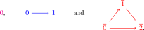
The five face maps \(d_0,d_1\colon [0] \to [1]\) and \(d_0,d_1,d_2\colon [1] \to [2]\) and the relations between them may be displayed as follows:
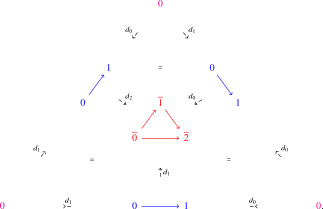
The two degeneracy maps \(s_0,s_1\colon [2] \to [1]\) may be interpreted as the following ‘projections’:
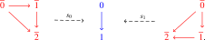
Let us establish some of the relations implicit in this figure.
Lemma 2.1.16 (Simplicial identities). There are vertex identifications \[ \begin{aligned} d_2(0) &= \overline{0} = d_1(0),\qquad & d_2(1) &= \overline{1} = d_0(0),\qquad & d_0(1) &= \overline{2} = d_1(1), \\ s_0(\overline{0}) &= 0 = s_0(\overline{1}), \qquad & s_0(\overline{2}) = &1, \quad s_1(\overline{0}) = 0, \qquad & s_1(\overline{1}) &= 1 = s_1(\overline{2}). \end{aligned} \] There are identifications of morphisms \[ \begin{aligned} s_0d_0& = \id_{[1]},\quad & s_0d_1& = \id_{[1]},\quad & s_0d_2& = \const_0,\\ s_1d_0& = \const_1,\quad & s_1d_1& = \id_{[1]},\quad& s_1d_2& = \id_{[1]}. \end{aligned} \] These identifications may be chosen so that the morphism identifications are compatible with the vertex identifications.
The last statement means that if we evaluate one of the six morphism identifications at one of the two vertices \(0\) and \(1\), the resulting identification agrees with the one obtained by combining the twelve vertex identifications. For example, in the case of evaluating \(s_0d_0 = \id_{[1]}\) at \(0\) it asserts that the following square of identifications commutes:
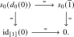
Proof
Recall that \(s_0\) and \(s_1\) are evaluation at the source and target. The defining pullback squares for \(d_2=\overline{\min}\) and \(d_0=\overline{\max}\) therefore give \[ s_0d_2 =\const_0,\qquad s_1d_2 =\id_{[1]},\qquad s_0d_0 = \id_{[1]},\qquad s_1d_0 = \const_1. \] The two remaining identifications follow from the definition of \(d_1\) as the constant-arrow functor.
The vertex identifications for \(s_0\) and \(s_1\) are the specified source and target identifications of \[ \overline0=\id_0,\qquad \overline1=\can,\qquad \overline2=\id_1. \] At the vertices, these constructions give identifications \[ \begin{aligned} d_2(0)& = \overline0 = d_1(0),\\ d_2(1)& = \overline1 = d_0(0),\\ d_0(1)& = \overline2 = d_1(1). \end{aligned} \] We choose them with the source and target comparisons just specified. This is possible because the categories of morphisms \(0\to0\), \(0\to1\), and \(1\to1\) in \([1]\) are contractible, by initiality of \(0\) and terminality of \(1\).
Each of these six vertex comparisons is chosen with its specified source and target identifications. Applying \(s_0\) or \(s_1\) therefore gives the corresponding commuting square of identifications, as required.
Definition 2.1.17 (Commutative triangle). Given a category \(C\), we define a commutative triangle in \(C\) to be a functor \([2] \to C\). We define the category of commutative triangles in \(C\) as \[ \Triang(C) \quad := \quad \Fun([2],C). \] The three functors \(d_0,d_1,d_2\colon [1] \to [2]\) induce three restriction functors \[ d^*_0, d^*_1, d^*_2\colon \Triang(C) \to \Ar(C). \]
We will frequently denote commutative triangles by
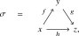
Definition 2.1.18. Given morphisms \(f\colon x \to y\) and \(g\colon y \to z\) in \(C\), a composite of \(f\) and \(g\) is a morphism \(h\colon x \to z\) that comes equipped with a commutative triangle \(\sigma\) of the above form:
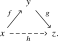 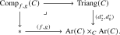
Here the right vertical map is the map induced by the following commutative diagram of restriction maps:
Example 2.1.19. The two functors \(s_0,s_1\colon [2] \to [1]\) induce functors
\[
s_0^*,s_1^*\colon \Ar(C) \to \Triang(C),
\]
so that every morphism \(f\colon x \to y\) in \(C\) gives rise to two commutative diagrams \(s_0^*(f)\) and \(s_1^*(f)\) in \(C\). As a consequence of the simplicial identities from Lemma 2.1.16, these commutative triangles have the following form:
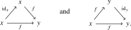
2.1.2 Commutative squares
Throughout, \(C\) denotes a category.
Definition 2.1.20 (Commutative square). We define a commutative square in \(C\) to be a functor \([1] \times [1] \to C\). We define the category of commutative squares in \(C\) as
\[
\Sq(C) \quad := \quad \Fun([1] \times [1],C).
\]
We will often display commutative squares as follows:
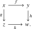
In ordinary category theory, a commutative square consists of morphisms \(f\), \(g\), \(h\) and \(k\) as above that satisfy the condition that \(h \circ f = k \circ g\). We will now formulate a synthetic analogue of this.
Definition 2.1.21. We define two functors \(j_0,j_1\colon [2] \to [1] \times [1]\) as
\[
j_0 := (s_0,s_1) \qquadtext{ and } j_1 := (s_1,s_0).
\]
These two commutative triangles in \([1] \times [1]\) may be visualized as follows:
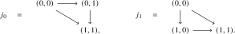
The simplicial relations \(s_0 \circ d_1 = \id_{[1]} = s_1 \circ d_1\) provide an identification making the following square commute:
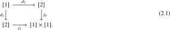
Construction 2.1.22. In a common categorical context \(\Gamma\), consider terms
\(\Gamma\vdash\sigma,\tau:\Triang(C)\) equipped with an identification
\(\Gamma\vdash\varphi\colon d_1^*(\sigma)= d_1^*(\tau)\). By
Axiom D, these determine a term
\[
\Gamma\vdash\square(\sigma,\tau,\varphi):\Sq(C)
\]
with specified identifications
\(\sigma= j_0^*(\square(\sigma,\tau,\varphi))\) and
\(\tau= j_1^*(\square(\sigma,\tau,\varphi))\). In the absolute case it is the
commutative square
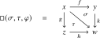
Construction 2.1.23. We construct functors \(p_0,p_2\colon [1] \times [1] \to [2]\), pictorially represented by the following diagrams: More precisely, \(p_0 := \square(\id_{[2]}, d_1s_0)\) is the commutative square determined by the two commutative triangles \(\sigma = \id_{[2]}\) and \(\tau = d_1 \circ s_0\), with identification \[ d_1^*(\sigma) = \id_{[2]} \circ d_1 = d_1 = d_1 \circ \id_{[1]} = d_1 \circ s_0 \circ d_1 = d_1^*(\tau). \] Similarly, \(p_2 := \square(d_1s_1, \id_{[2]})\) is the square determined by \(\sigma = d_1 \circ s_1\) and \(\tau = \id_{[2]}\), with analogous identification between \(d_1^*(\sigma)\) and \(d_1^*(\tau)\).
By construction these two maps satisfy the following two relations: \[ p_0 \circ j_0 = \id_{[2]}, \qquad p_0 \circ j_1 = d_1 \circ s_0, \qquad p_2 \circ j_0 = d_1 \circ s_1, \qquad p_2 \circ j_1 = \id_{[2]}. \]
Lemma 2.1.24. We have the relations \[ \square(s_0,s_1) = \pr_1 \qquadtext{ and } \square(s_1,s_0) = \pr_2 \] of functors \([1] \times [1] \to [1]\).
Proof
It suffices to observe that these two projection maps have the correct restrictions to the triangles \(j_0\) and \(j_1\).
Lemma 2.1.25. We have \[ \max = \square(s_1,s_1) \qquadtext{ and } \min = \square(s_0,s_0). \]
Proof
It suffices to check that \(\max\) and \(\min\) restrict correctly along \(j_0\) and \(j_1\), and this follows directly by unwinding the definitions of \(\square(s_1,s_1)\) and \(\square(s_0,s_0)\) from Construction 2.1.22.
Lemma 2.1.26. We have relations \begin{align*} j_0p_0(x,y) = (\min(x,y),y), &\qquad j_1p_0(x,y) = (y,\min(x,y)), \\ j_0p_2(x,y) = (y,\max(x,y)), &\qquad j_1p_2(x,y) = (\max(x,y),y). \end{align*}
Proof
Since \(p_0 := \square(\id_{[2]}, d_1s_0)\) and \(p_2 := \square(d_1s_1, \id_{[2]})\), we have \begin{align*} s_0p_0 &= \square(s_0, s_0d_1s_0) = \min, & s_1p_0 &= \square(s_1, s_1d_1s_0) = \square(s_1,s_0) = \pr_2 \\ s_0p_2 &= \square(s_0d_1s_1, s_0) = \square(s_1,s_0) = \pr_2, & s_1p_2&= \square(s_1d_1s_1, s_1) = \max, \end{align*} where we used Lemma 2.1.24. Using \(j_0 = (s_0,s_1)\) and \(j_1 = (s_1,s_0)\) we get the desired four relations.
Lemma 2.1.27. The map \(\lra{0,1,2}\colon * \sqcup * \sqcup * \to [2]^{\simeq}\) is an equivalence.
Proof
Recall the functors
\(j_0=(s_0,s_1)\colon[2]\to[1]\times[1]\) and
\(p_0\colon[1]\times[1]\to[2]\) from
Definition 2.1.21 and Construction 2.1.23. They
satisfy \(p_0j_0=\id_{[2]}\). Choose an inverse to the preferred equivalence
\[
\kappa:=(\pr_1^{\simeq},\pr_2^{\simeq})\colon
([1]\times[1])^{\simeq}\iso([1]^{\simeq})^2
\]
from Lemma 1.4.17, and put
\(\bar j_0:=\kappa\circ j_0^{\simeq}\) and
\(\bar p_0:=p_0^{\simeq}\circ\kappa^{-1}\). Let
\[
a\colon *\sqcup *\sqcup *\longrightarrow(*\sqcup *)^2
\]
send \(0,1,2\) to \((0,0),(0,1),(1,1)\), respectively, and let
\[
b\colon(*\sqcup *)^2\longrightarrow *\sqcup *\sqcup *
\]
send \((0,0),(0,1),(1,0),(1,1)\) to \(0,1,0,2\), respectively. Then
\(b\circ a=\id\). The defining identifications for groupoid-core functoriality and
the displayed descriptions of \(j_0\) and \(p_0\) show that the following squares commute:
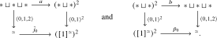
Lemma 2.1.28. For categories \(C\) and \(D\), the maps \(C^{\simeq} \to (C \sqcup D)^{\simeq}\) and \(D^{\simeq} \to (C \sqcup D)^{\simeq}\) induce an equivalence \(C^{\simeq} \sqcup D^{\simeq} \iso (C \sqcup D)^{\simeq}\).
Proof
Let \(i_0\colon * \to * \sqcup *\) and \(i_1\colon * \to * \sqcup *\) denote the inclusions of the first and second point, respectively. By combining Lemma 1.6.4 and Axiom B.5', there are pullback squares
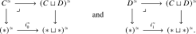 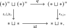
Remark 2.1.29. By Proposition 1.7.16 and Lemma 2.1.27, there are preferred equivalences \[ \Map([1],[1]) \simeq \Fun([1],[1])^{\simeq} \simeq [2]^{\simeq} \simeq * \sqcup * \sqcup *. \] We may think of these three points as picking out the three morphisms \(\id_0\colon 0 \to 0\), \(\id_1\colon 1 \to 1\) and \(\can\colon 0 \to 1\) of \([1]\). In particular, we see that \([1]\) only has three morphisms.